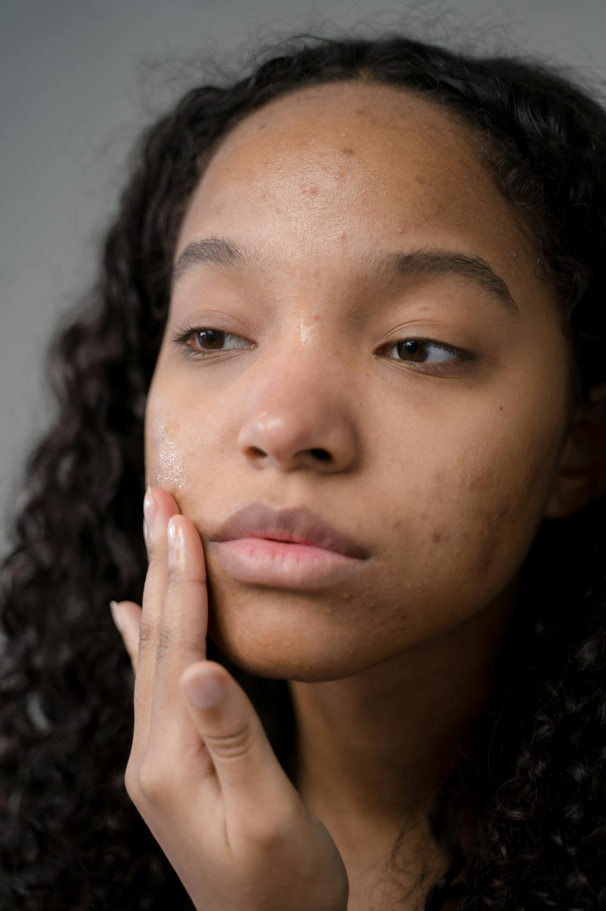

Everything You Need to Know About Tretinoin

Hadiyah Daché, licensed cosmetologist & esthetician
Skingredients
8 min
← All articlesThe Book →Friendly reminder: this post contains affiliate links, which help support the Glowdega Archive. If you buy through them, I may earn a commission at no extra cost to you.
There is a love/hate relationship between tretinoin and estheticians. Some outright refuse to work with clients who are actively using tretinoin while others can make accommodations and find routines that work around tretinoin use. Here at Glowdega, we're more of the latter. Enough clients have come to us confused about why they've been turned away from previous estheticians. So we've put together this handy post to give you the real. Read on to learn everything you need to know about tretinoin!
The History of Tretinoin
Tretinoin, also known by its brand names Retin-A, Altreno, etc., stands out in dermatological practice as a gold standard treatment for acne and an effective agent for combating the signs of aging. The story of tretinoin is one that intertwines groundbreaking scientific discovery with ethical contemplation, reflecting the complex journey of many medical advances. And by complex, we mean racism.
Developed by a team led by Dr. Albert Kligman and Dr. James Fulton at the University of Pennsylvania in the 1960s, tretinoin emerged from research that intended to understand the pathogenesis of acne and to explore treatments that could offer a reprieve from this pervasive skin condition. They observed the effects of vitamin A on skin health and decided to investigate its derivatives, leading to the development of tretinoin. Their initial work was on treating acne, and they found that tretinoin was effective in managing acne by promoting the turnover of skin cells and reducing the formation of new comedones, which are the skin lesions that can eventually turn into pimples.
Kligman's contributions to dermatology extend beyond just tretinoin; he was also involved in a lot of other fundamental skin research. However, his work on retinoids like tretinoin really transformed the field, providing a new avenue for acne treatment that also had these unexpected benefits for skin aging.
Retinoids and Racism?
Though Dr. Kligman's and Dr. Fulton's contributions to dermatology are monumental, they are shadowed by the ethical breaches during their research. The Holmesburg Prison experiments, where they tested tretinoin among other substances, brought to light significant concerns regarding informed consent and the exploitation of incarcerated individuals—matters that profoundly influenced the establishment of stringent clinical trial ethics thereafter.
For twenty years, this research team led experiments at Holmesburg Prison testing various substances for potential use in dermatology. These experiments raised serious ethical questions because the prisoners might not have been able to give fully informed consent, and they might have been coerced into participation through monetary compensation or other means. The backlash from these experiments changed the way clinical trials in this country are run. The Belmont Report and the establishment of Institutional Review Boards (IRBs) were partly a response to such ethical concerns, ensuring that all research involving human subjects would be conducted in accordance with three basic ethical principles: respect for persons, beneficence, and justice.
Despite the controversy, tretinoin went on to become a groundbreaking treatment for acne and was later discovered to have beneficial effects on skin aging. Today, its use is widespread, but it remains a potent reminder of the importance of ethical standards in medical research.
How does Tretinoin Work for Acne?
The potency of tretinoin as an acne treatment is derived from its action as a derivative of Vitamin A, enabling it to expedite cell turnover and prevent the clogging of pores— a primary factor in acne formation. Its anti-inflammatory properties further contribute to its efficacy, making it a mainstay treatment that dermatologists trust. However, its strength necessitates a considerate approach when integrating into a skincare regimen, especially for those embarking on its use for anti-aging purposes.
Tretinoin helps normalize the process of skin cell turnover. This means it promotes the regular shedding of the cells that line the follicles of the oil glands. In acne, these cells can stick together and clog up the follicles, forming comedones (which are blackheads and whiteheads). By preventing these cells from becoming sticky and clogging pores, tretinoin helps reduce the formation of new comedones. This also prevents skin congestion.
Tretinoin can also influence the oil glands and potentially decrease oil production. An overproduction of oil can worsen acne by providing more ‘food’ for acne-causing bacteria and contributing to clogged pores. By exfoliating the top layer of skin, tretinoin can improve the absorption and effectiveness of other topical medications, which can be a part of combination acne therapies. Lastly, it can help lighten post-acne marks by increasing the turnover of skin cells, which helps to even out skin tone over time. Additionally, by preventing the formation of new acne lesions, it reduces the risk of post-inflammatory hyperpigmentation and scarring.
Tretinoin Is Not Always A Long-Term Solution for Acne
Achieving long-term success with tretinoin in the treatment of acne can be elusive for some, primarily due to factors that impact its sustained effectiveness. A key reason for faltering results is inconsistent usage; tretinoin demands a disciplined approach, with regular application over an extended period to maintain its benefits. Moreover, individuals may become discouraged during the initial "purging" phase, when acne can temporarily worsen as the medication begins to work, and discontinue its use prematurely. Side effects like dryness, redness, and peeling are common when starting tretinoin and can be significant enough to deter patients from continuing the treatment. Additionally, a lack of a holistic treatment plan addressing all aspects of acne, including lifestyle and diet, can prevent long-term success. Tretinoin is often a part of a multifaceted treatment regimen rather than a standalone solution.
Other aspects that contribute to the inconsistency in long-term results include the possibility of developing a tolerance to tretinoin, although this is a subject of debate among experts, and the potential of not addressing underlying medical conditions such as hormonal imbalances that can drive acne. Furthermore, the journey to finding the correct formulation and strength of tretinoin can be a process of trial and error, which can affect patient adherence. Misuse due to misinformation—such as improper application techniques or pairing with incompatible skincare products—and inadequate sun protection can also diminish the efficacy of tretinoin and compromise long-term results. Overall, for enduring success with tretinoin, it is critical to engage in a meticulously tailored and comprehensive acne management plan under the guidance of a dermatologist or esthetician skilled enough to work with the treatment.
Why Estheticians Don't Work With Tretinoin
Outside of the obvious of tretinoin being a prescription drug which estheticians can't prescribe, there are a few other reasons some may opt to turn clients away. One of the major reasons is contraindications. Using tretinoin either topically or orally is usually a big contraindication for most facial treatments. While there are a few facial treatments that can be done while one is using tretinoin, those treatments are going to be more on the gentle side and—depending on the esthetician—may not involve extractions. This can result in the client feeling relaxed but maybe not getting the results they are expecting. Another reason an esthetician may turn a tretinoin client away is due to the ingredients in their backbar or facial protocol. Most estheticians use an array of exfoliants (AHAs/BHAs) to give you that glowing, radiant skin. Tretinoin is a pretty powerful exfoliant by itself and you certainly don't want to mix additional exfoliants with it. You also can't do any waxing while using retinoids like tretinoin. And, lastly, some estheticians just don't feel comfortable making any recommendations that can complement a dermatologist's prescription (or be confident to challenge a dermatologist's recommendations).
Working with tretinoin (or not) is a personal choice and you shouldn't down any esthetician who chooses not to do so. At Glowdega, there are a few services that someone using tretinoin wouldn't be able to do. But because we primarily create customized treatments for each individual client, we're able to accommodate those using tretinoin and other prescription topicals just fine. You can check out our blog posts on tretinoin and facials here.
Can Retinoids Really Make You Look Young Forever?
In the realm of anti-aging, tretinoin is embraced by individuals noticing the early signs of aging, such as fine lines and uneven skin tone, or those who have photoaged skin. Its ability to enhance skin turnover not only addresses acne scars but also contributes to a more youthful dermal appearance. It can also help fade hyperpigmentation and even out skin tone by accelerating the turnover of pigmented cells.
The Pregnancy Pause
Tretinoin is classified as a pregnancy category D drug by the FDA, which means there is positive evidence of human fetal risk based on human data, but the potential benefits from the use of the drug in pregnant women may be acceptable despite its potential risks. Because the risks are significant, the use of tretinoin during pregnancy is generally not recommended.
Here's why tretinoin is avoided during pregnancy:
Retinoid Embryopathy: Tretinoin, like other retinoids, can cause a collection of birth defects known as retinoid embryopathy. This condition can include abnormalities in the central nervous system, heart, and thymus in developing fetuses.
Vitamin A Analogue: Tretinoin is a derivative of Vitamin A, which is known to cause teratogenic effects when taken in excess during pregnancy. High doses of Vitamin A have been linked to congenital malformations in humans. While the topical application of tretinoin results in much lower systemic absorption than oral forms, there is still a risk that it could contribute to a level of Vitamin A that could potentially harm the fetus.
Precautionary Principle: Out of caution and due to the potential for severe birth defects, any products containing tretinoin or other retinoids are typically contraindicated during pregnancy. This approach aligns with the precautionary principle, which is the idea that it's better to avoid any substances that could possibly harm the developing fetus, even if the exact level of risk is not clearly established for topical use.
Because of these reasons, doctors advise pregnant women, or those who are trying to become pregnant, to avoid using tretinoin. If a woman becomes pregnant while using tretinoin, she should stop using it immediately and consult with her healthcare provider. It's always important for pregnant women to discuss any medication, including topicals, with their healthcare provider to understand any potential risks to their baby.
Now that you know all the details on tretinoin, we hope you'll come visit us soon to learn more about your skin. If you are using tretinoin, we recommend booking our GENESIS treatment. And remember: to use a retinoid is to make a pact with patience!